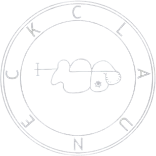
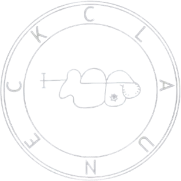

Bienvenido al ciberaltar de Clauneck, donde la riqueza y la abundancia fluyen. Aquí, cada oración y plegaria es un tributo a Clauneck, el espíritu que otorga prosperidad.
Únete a nuestra comunidad de fieles. ¡Invoca a CLAUNECK con nosotros y permite que transforme tu vida financieramente!
Explora Más
Nombres Sagrados de Invocación
Inscribe en tu mente los nombres sagrados de Clauneck mediante la gnosis:
- CLAUNECK
- CLAUNT
- AHVALEN ESSEN CLAUNECK KIARR
CLICK EN LA SIGUIENTE OFRENDA PARA ACTIVAR A CLAUNECK:
Significado de la Cábala
Clauneck, como espíritu de la abundancia y la prosperidad, está estrechamente relacionado con el número sagrado 7, que simboliza la perfección y la conexión espiritual en la Cábala. Este número se asocia con la séptima letra hebrea, Zayin (ז), y con la sefirá Netzaj, que representa la victoria y el logro de metas. Clauneck potencia estas cualidades, ayudando a sus devotos a manifestar sus deseos materiales y espirituales a través de correspondencias cabalísticas como el planeta Venus y el elemento Tierra, ambos vinculados a la prosperidad y el crecimiento. Al invocar a Clauneck, se recomienda meditar en el número 7 y recitar nombres sagrados como "CLAUNECK" y "ABUNDANCIA", visualizando el flujo de riqueza en la vida del practicante.
Prender Vela a Clauneck
Han prendido 0 vela(s) dedicadas a CLAUNECK en este altar.
¡No te lo pierdas!
Visita Grimorio Magia del Caos y suscríbete a nuestro canal de YouTube: Magia Caótica para más contenido mágico.